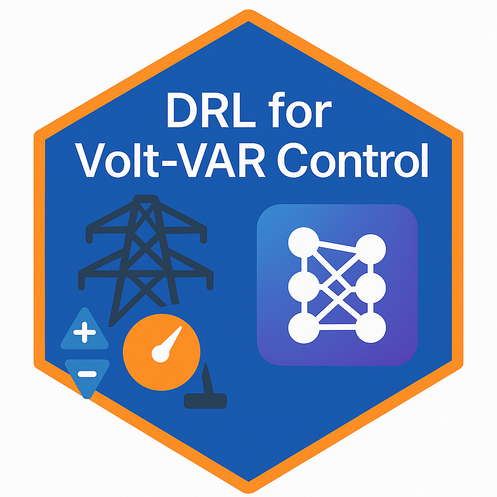
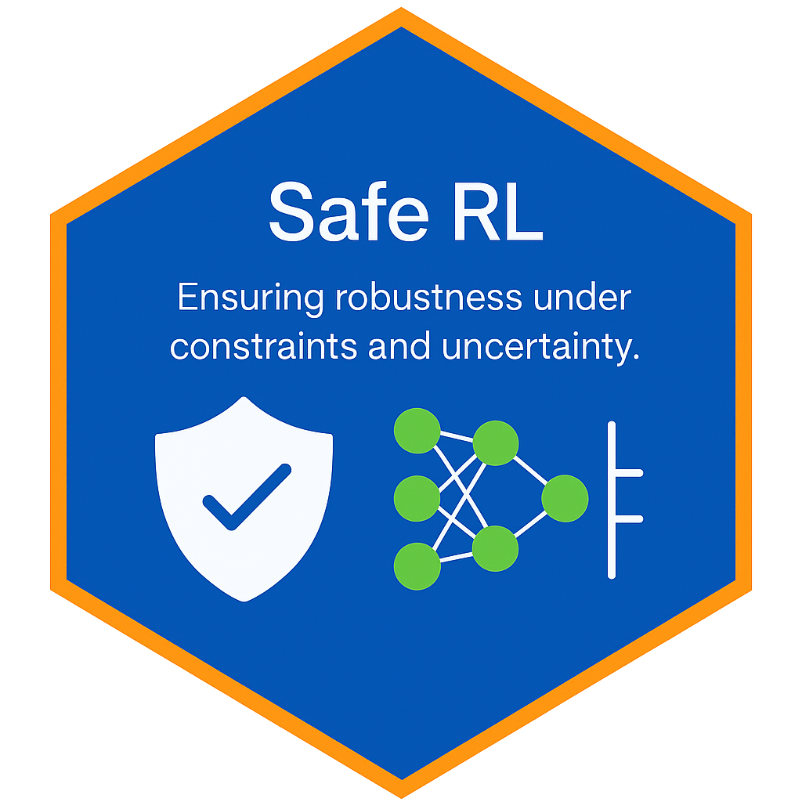
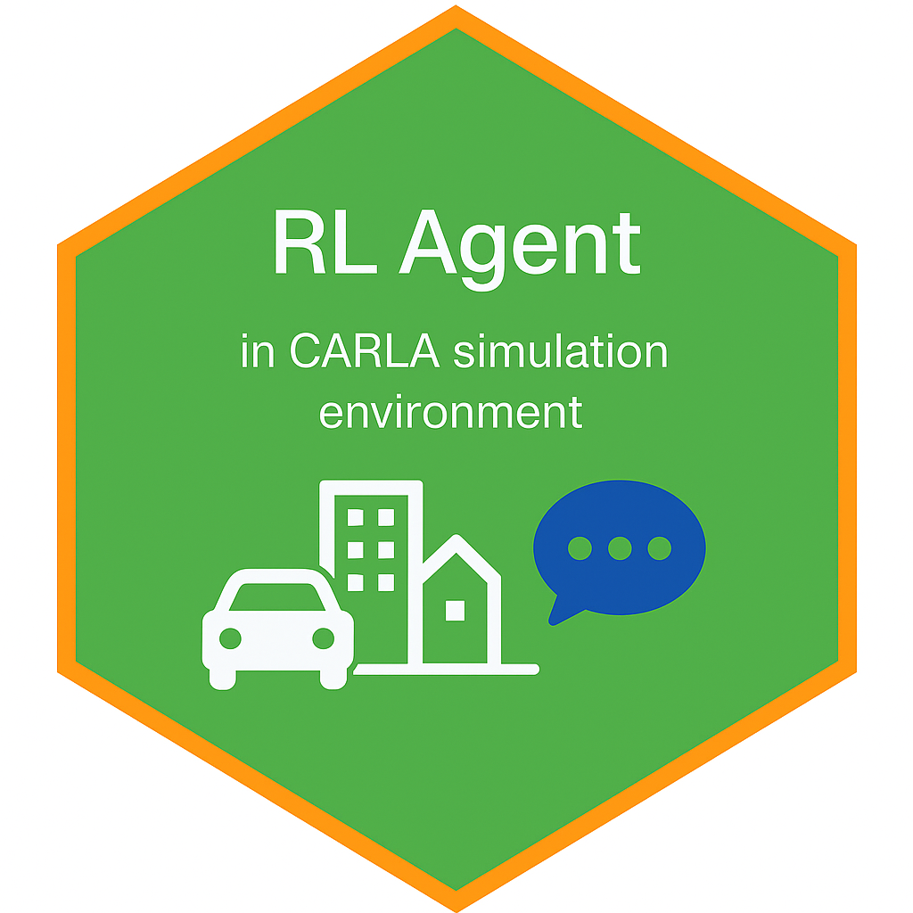

Research
Safe, interpretable, and adaptive AI for systems that act in the physical world
I develop safe, interpretable, and adaptive AI systems for real-world cyber-physical environments that must operate under uncertainty, strict physical constraints, and adversarial conditions. My work sits at the intersection of safe reinforcement learning, physics-informed AI, probabilistic modeling, and AI safety evaluation, with a core focus on building systems that are robust, verifiable, and deployable at scale in safety-critical domains.
Research at a Glance
How the pieces fit: the methods I build on, the properties I want every system to have, and where I apply them.
Methods
Properties
Research Vision
The most important open problems in AI are not only about capability. They are about safety, verification, and alignment. My path into these problems runs through safety-critical control: in power grids, a learning-based controller that fails under noise or attack has physical consequences. That experience shapes how I approach AI safety more broadly. I treat constraints, uncertainty, and worst-case behavior as first-class design requirements, and I test systems for how they fail, not only for how well they perform.
My research agenda builds on three directions:
Safe & constrained reinforcement learning
- Question
- How do we give RL agents safety guarantees that still hold under distribution shift and adversarial perturbation?
- Approach
- Formal safety constraints, physics-informed inductive biases, certified robustness, and safe exploration, validated on large-scale cyber-physical systems.
Scalable AI oversight
- Question
- How can we systematically catch reward hacking, sycophancy, and goal misgeneralization in deployed agentic systems?
- Approach
- Evaluation frameworks and behavioral benchmarks for agents, and safety monitors that transfer across models and settings.
Mechanistic interpretability & deceptive alignment
- Question
- Can we locate and detect hidden objectives, such as evaluation awareness, inside a model's internals?
- Approach
- Sparse autoencoders, activation patching, steering vectors (CAA), and probe transfer on open-weight language models.
Research Thrusts

Safe & Intelligent Systems for Smart Energy
How can learning-based controllers keep a power grid stable when they face noise, faults, and attacks?
Physics-informed deep RL, safe and uncertainty-aware control, LLM-guided planning, and sim-to-real transfer for smart grids and DER-integrated energy systems. Agents remain reliable under sensor noise, hardware faults, non-stationarity, and adversarial perturbations.

AI Safety & Alignment
Can we tell when an AI agent behaves differently because it knows it is being evaluated?
Behavioral and mechanistic evaluations to detect deceptive alignment, reward hacking, and eval-awareness in LLM agents, and scalable oversight frameworks for agentic systems in safety-critical deployments.

Vision & Simulation for Autonomous Systems
How do we carry policies trained in simulation into the real world without losing safety?
End-to-end perception-control pipelines, multimodal sensor fusion, and sim-to-real transfer using CARLA, AirSim, and OpenDSS for autonomous and cyber-physical systems.
Ongoing Projects
Federated DRL for Cyber-Resilient Volt-VAR Optimization
Decentralized, communication-efficient control using LSTM-enhanced PPO agents across distributed DERs.
Stress-Testing Eval-Aware Safety Monitors
Probing LLM agents for eval-awareness via CAA on Nemotron-49B and Mistral; extending replication to silent model organisms. Supported by NSF ACCESS ACCELERATE (CIS260799).
LLM-Guided Autonomous Planning for Smart Buildings
Converting user prompts to interpretable control policies using LLMs (OpenAI, Claude) in CityLearn environments.
Selected Publications
Collaborate
I am interested in collaborations on safe reinforcement learning, physics-informed AI, AI safety evaluation, and learning-based control for energy and autonomous systems.